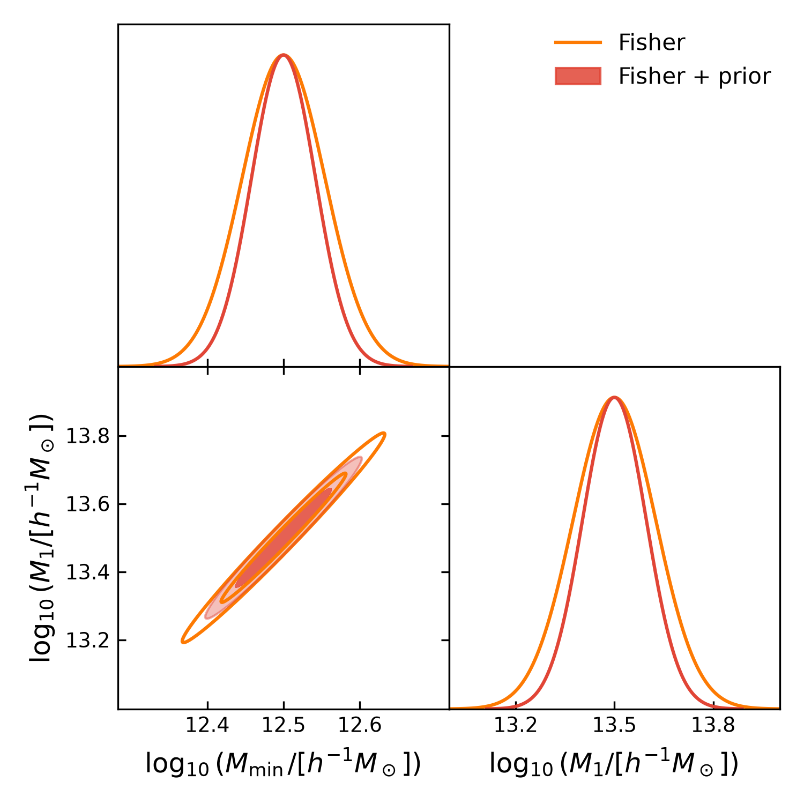
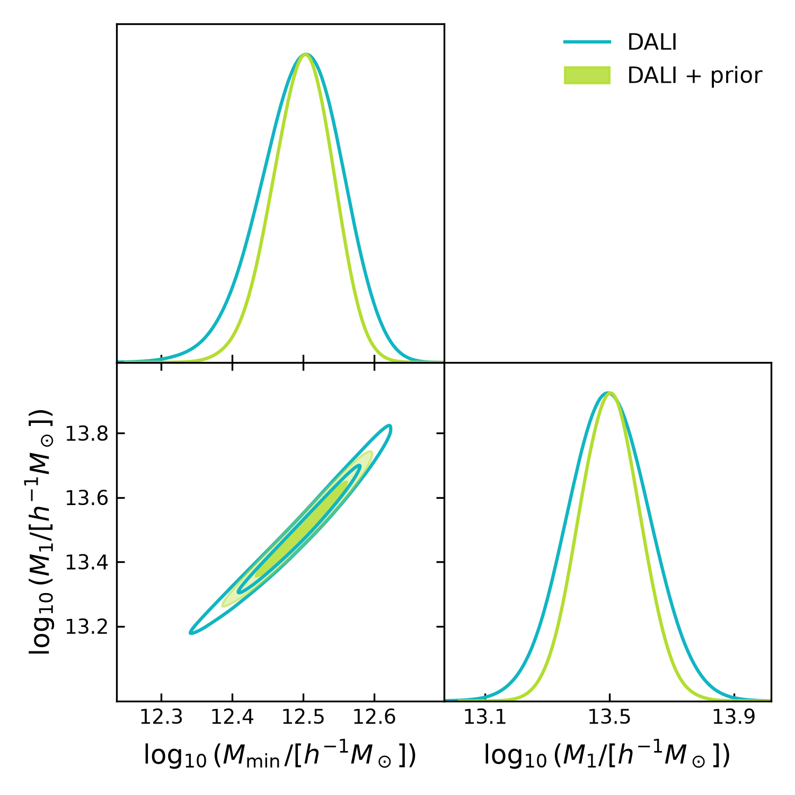
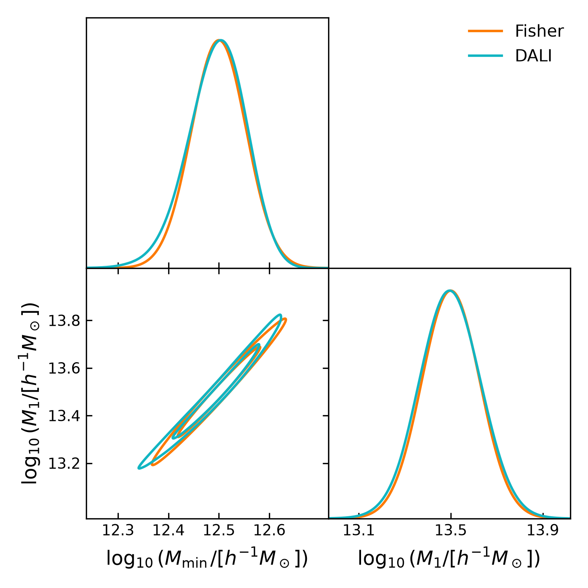

End-to-end forecast¶
End-to-end forecast¶
This example demonstrates an end-to-end \(\Delta\Sigma(R)\)
forecast using DeltaSigmaForecastBuilder.
DSF constructs the tomographic samples, data vector, and covariance, while DerivKit computes the Fisher matrix and third-order DALI forecast.
We vary two halo occupation distribution (HOD) parameters,
and compare forecasts with and without independent Gaussian priors on the logarithmic HOD mass parameters.
The fiducial values and prior standard deviations are
Forecast configuration¶
The example uses DESI LRG lens galaxies and LSST Year 1 source galaxies. The lens sample has three redshift bins, while the source sample uses the default Binny survey tomography.
Lens-source pairs are selected by requiring the mean source redshift to exceed the mean lens redshift and applying an overlap threshold of 0.10.
The forecast uses five projected radial bins between \(2\) and \(25\,h^{-1}\mathrm{Mpc}\), a survey area of 1000 square degrees, and an intrinsic ellipticity dispersion of 0.26.
The HOD model is evaluated using pk2d_hod.
DSF computes the fiducial excess surface density data vector
and its Gaussian covariance from the galaxy-matter and
galaxy-galaxy power spectra.
Forecast workflow¶
The complete forecast is constructed using
DeltaSigmaForecastBuilder.
First, DSF prepares the tomographic samples, fiducial data vector, and covariance:
forecast = builder.prepare()
model, theta0, cov = builder.forecast_inputs()
fk = builder.forecastkit()
The Fisher matrix and third-order DALI tensors are then computed using DerivKit:
fisher = fk.fisher(
method="finite",
stepsize=1e-2,
num_points=3,
)
dali = fk.dali(forecast_order=3)
DerivKit provides GetDist-compatible forecast distributions:
fisher_gaussian = fk.getdist_fisher_gaussian(
fisher=fisher,
names=names,
labels=labels,
label="Fisher",
)
dali_samples = fk.getdist_dali_emcee(
dali=dali,
names=names,
labels=labels,
label="DALI",
)
Running the example¶
The complete executable example is available in
forecast_hod.py.
Run it from the DSF repository root:
python -u docs/examples/forecast_hod.py
The script constructs the DSF data vector and covariance, computes the Fisher and DALI forecasts, samples the DALI distributions, and generates three comparison plots.
The Fisher matrix and DALI tensors are cached in
forecast_hod_output/forecast_cache.npz.
When the cache exists, the script reuses the stored tensors. Otherwise, it computes and saves them.
The full source code is included below.
"""HOD Fisher and DALI forecasts with DSF.
Run from the repository root:
python -u docs/examples/forecast_hod.py
"""
from pathlib import Path
import matplotlib.pyplot as plt
import numpy as np
from getdist import plots
from dsf import DSF_COLORS, DeltaSigmaForecastBuilder
from dsf.modelling import make_ccl_cosmology, pk2d_hod
OUTPUT = Path(__file__).resolve().parent / "forecast_hod_output"
OUTPUT.mkdir(parents=True, exist_ok=True)
CACHE = OUTPUT / "forecast_cache.npz"
names = ["log10Mmin_0", "log10M1_0"]
labels = [
r"\log_{10}(M_{\min}/[h^{-1}M_\odot])",
r"\log_{10}(M_1/[h^{-1}M_\odot])",
]
theta0 = np.array([12.5, 13.5])
sigma_prior = np.array([0.1, 0.2])
prior_cov = np.diag(sigma_prior**2)
fisher_prior = np.diag(1.0 / sigma_prior**2)
cosmo = make_ccl_cosmology(
transfer_function="eisenstein_hu",
matter_power_spectrum="halofit",
)
builder = DeltaSigmaForecastBuilder(
cosmo=cosmo,
pk2d_func=pk2d_hod,
pk2d_kwargs={
"k_array": np.geomspace(1e-3, 20.0, 40),
"a_array": np.linspace(0.35, 1.0, 10),
},
theta0=theta0,
parameter_names=names,
r=np.geomspace(2.0, 25.0, 5),
rp_bin_edges=np.geomspace(2.0, 25.0, 6),
area_deg2=1000.0,
sigma_e=0.26,
tomography_kwargs={
"lens": {
"survey": "lsst",
"role": "lens",
"year": "1",
"overrides": {"bins": {"n_bins": 2}},
},
"source": {
"survey": "lsst",
"role": "source",
"year": "1",
"overrides": {"bins": {"n_bins": 2}},
},
"overlap_threshold": 1.0,
"source_behind_lens": True,
},
)
# Prepare the DSF model and covariance.
forecast = builder.prepare()
data_vector = np.asarray(forecast["fiducial_data_vector"])
bin_pairs = np.asarray(forecast["bin_pairs"], dtype=int).reshape(-1, 2)
model, theta0, cov = builder.forecast_inputs()
kit = builder.forecastkit()
if CACHE.exists():
with np.load(CACHE, allow_pickle=True) as cached:
fisher_like = cached["fisher_like"]
dali = cached["dali"].item()
else:
fisher_like = kit.fisher(
method="finite",
stepsize=1e-2,
num_points=3,
)
dali = kit.dali(forecast_order=3)
np.savez_compressed(
CACHE,
theta0=theta0,
cov=cov,
fisher_like=fisher_like,
dali=np.array(dali, dtype=object),
)
fisher_post = fisher_like + fisher_prior
print("Selected bin pairs:", bin_pairs)
print("Data vector shape:", data_vector.shape)
print("Covariance shape:", cov.shape)
print("Likelihood Fisher:\n", fisher_like)
print("Prior Fisher:\n", fisher_prior)
print("Posterior Fisher:\n", fisher_post)
print("Likelihood sigmas:", np.sqrt(np.diag(np.linalg.inv(fisher_like))))
print("Posterior sigmas:", np.sqrt(np.diag(np.linalg.inv(fisher_post))))
# GetDist distributions
g_fisher = kit.getdist_fisher_gaussian(
fisher=fisher_like,
names=names,
labels=labels,
label="Fisher",
)
g_fisher_prior = kit.getdist_fisher_gaussian(
fisher=fisher_post,
names=names,
labels=labels,
label="Fisher + prior",
)
g_dali = kit.getdist_dali_emcee(
dali=dali,
names=names,
labels=labels,
label="DALI",
)
g_dali_prior = kit.getdist_dali_emcee(
dali=dali,
names=names,
labels=labels,
label="DALI + prior",
prior_terms=[
("gaussian", {"mean": theta0, "cov": prior_cov}),
],
)
def make_plot(samples, colors, filled, legend, filename):
plotter = plots.get_subplot_plotter(width_inch=5)
plotter.settings.linewidth_contour = 1.5
plotter.settings.linewidth = 1.5
plotter.settings.figure_legend_frame = False
plotter.settings.legend_rect_border = False
plotter.triangle_plot(
samples,
params=names,
filled=filled,
contour_colors=colors,
contour_lws=[1.5] * len(samples),
contour_ls=["-"] * len(samples),
legend_labels=legend,
)
plotter.export(str(OUTPUT / filename))
plt.close("all")
# Fisher with and without priors.
make_plot(
[g_fisher, g_fisher_prior],
[DSF_COLORS[1], DSF_COLORS[0]],
[False, True],
["Fisher", "Fisher + prior"],
"fisher_priors.pdf",
)
# DALI with and without priors.
make_plot(
[g_dali, g_dali_prior],
[DSF_COLORS[4], DSF_COLORS[3]],
[False, True],
["DALI", "DALI + prior"],
"dali_priors.pdf",
)
# Fisher versus DALI.
make_plot(
[g_fisher, g_dali],
[DSF_COLORS[1], DSF_COLORS[4]],
[False, False],
["Fisher", "DALI"],
"fisher_vs_dali.pdf",
)
print(f"\nOutput directory: {OUTPUT}")
Notes¶
This example illustrates the DSF forecasting interface rather than a production LSST DESC analysis.
The covariance is evaluated at the fiducial parameters and held fixed throughout the forecast. Covariance derivatives are not included.
The Gaussian HOD parameter priors are illustrative and are not derived from external HOD measurements.
Production configurations and survey-specific analyses are maintained in the companion DSF analysis repository.
Forecast comparison¶
The figures below compare Fisher and third-order DALI forecasts with and without Gaussian parameter priors.
The first two figures show the effect of the priors on Fisher and DALI separately. The third compares Fisher and DALI without external priors.
The Fisher matrix and DALI tensors are loaded from cached DSF results. Only GetDist sampling and plotting are performed during the documentation build.


